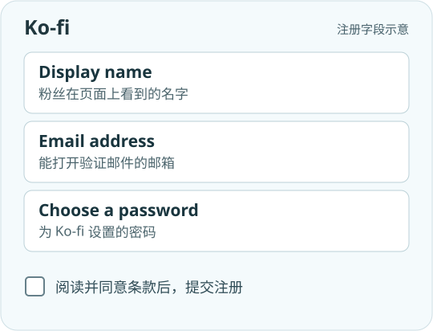
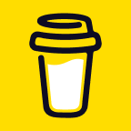
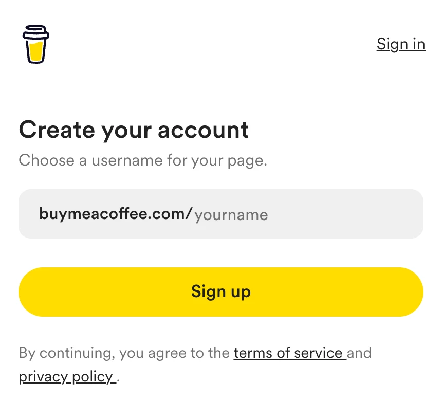

打开 Ko-fi 官方注册页。在 Display name 填粉丝熟悉的名字，例如你的频道名；在 Email address 填常用邮箱，再为 Ko-fi 设置密码。Ko-fi 要求用户年满 18 岁。阅读条款，同意后勾选并提交。


想把打赏链接放进 YouTube 频道简介或视频说明，可以选下面任意一家开通。粉丝点开链接，就能看到你的介绍和打赏入口。
打开 Ko-fi 官方注册页。在 Display name 填粉丝熟悉的名字，例如你的频道名；在 Email address 填常用邮箱，再为 Ko-fi 设置密码。Ko-fi 要求用户年满 18 岁。阅读条款，同意后勾选并提交。

打开 Ko-fi 发来的 Confirm Your Email 邮件，点激活链接，或按页面提示输入验证码。登录后在 Profile 检查 Username：它决定链接里 ko-fi.com/ 后面的部分。选好后，加上头像和一句简介，让粉丝能认出你。
打开 Payment Settings（收款设置），选择你能使用的 PayPal 或 Stripe，点 Connect，在支付服务商的页面完成授权。选其中一种即可。回到 Ko-fi，确认已连接，再选择打赏币种。
打开自己的公开主页，复制形如 ko-fi.com/你的用户名 的地址。用浏览器无痕窗口打开一次，核对显示名称和打赏入口，再把链接放到频道简介里。
官方帮助 · 主页与收款设置 · 收不到激活邮件怎么办

Buy Me a Coffee打开 Buy Me a Coffee 官方注册页。在 buymeacoffee.com/ 右侧填用户名，只输入斜杠后面的部分。选一个接近频道名、方便粉丝记住的拼写，再点黄色的 Sign up（注册）。

选择邮箱注册，填入常用邮箱，再把平台发来的确认码填回注册页。也可以选择页面提供的第三方登录方式。接着填写显示名称、上传头像、写一句创作简介，并加上你的频道或个人网站链接。
进入 Payouts（收款），选择实际所在地区，跟随平台跳转到 Stripe。按当地要求填写身份和银行账户资料，完成验证并返回后台查看连接状态。如果这一步还没完成，粉丝暂时看不到打赏页。
打开自己的公开主页，复制形如 buymeacoffee.com/你的用户名 的地址。用无痕窗口打开，确认头像、简介和请喝咖啡的按钮都能看到，再分享给粉丝。
官方帮助 · 创建主页和设置收款